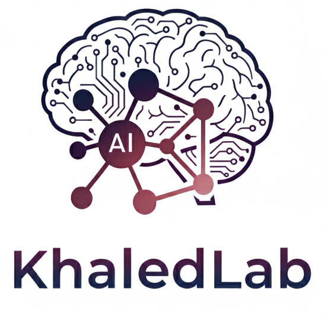

Welcome to

Welcome to
At the intersection of algorithms, data and discovery, KhaledLab seeks to harness the power of Artificial Intelligence to solve some of the most pressing challenges in science and society. Based in the Department of Computer Science at Southern Illinois University Carbondale (SIUC) and led by Dr. Khaled Mohammed Saifuddin, our group explores how intelligent systems can be made more robust, efficient, and interpretable. We focus on graph machine learning, graph mining, and Network Science, developing new methods for complex and heterogeneous network representation. These advances are applied across diverse domains, from bioinformatics, health data analysis to sequence and event understanding, vision-language reasoning tasks. By bridging fundamental theory with real-world impact, KhaledLab pushes the boundaries of AI toward creating knowledge that is not only powerful, but transformative.
Latest news
-
New
Surface Cues Over Structure: Probing LLM Behavior on Brain Connectivity Graphs accepted at IEEE Big Data 2026. Congratulations Prapti on her first first-author PhD work! 🎉
-
New
Does Graph Compression Preserve Signal Propagation? accepted at IEEE ICMLA 2026. Congratulations Kawshik on his first first-author PhD work! 🎉
Research interests
Graph AI
Advancing graph and hypergraph neural networks, graph GenAI with a focus on robustness, efficiency, and interpretability.
Graph Mining and Network Science
Discovering patterns, communities, and dynamics in large-scale, complex heterogeneous networks.
AI for Biomedicine
Applying graph-based AI to drug discovery, drug repurposing, bioinformatics, and health data analytics.
Sequence and Multimodal Learning
Modeling sequential, temporal, and multimodal data for event prediction, genomics, and vision–language reasoning.